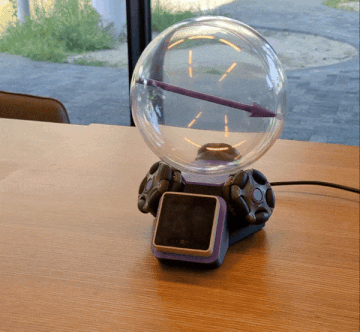

The Building Blochs project allows anyone to build their own life-sized qubit. A plastic ball represent the Bloch Sphere, which is precisely the mathematical model that most scientists use to think about qubits, the information they store, and the operations they can do. The included motorized platform allows the sphere to rotate automatically or by the user's press of a button, creating a platform for various games and puzzles.

A full bill of materials, open 3D-print files and the firmware. About €115 in parts and a free weekend.
Open the build guide → 02Teach quantum mechanics the fun way! Ready-made lesson outlines on qubits, gates and rotations.
Browse lesson plans → 03Take your Sphere to a science festival and add games that anyone between 6-100 years old can play.
See all games →The Bloch sphere is how physicists picture a single qubit: every possible state is one point on the ball, marked by the arrow.
The north pole is |0⟩, the south pole is |1⟩, and every point in between is a so-called superposition.
Each quantum gate or operation corresponds to a rotation. This lets anyone observe and play with actual quantum gates!
A single spinning arrow anyone can read — no equations on the board and no prior physics required.
The very same ball explains superposition to a curious eight-year-old and unitary rotations to physics undergrads.
It's the real representation researchers use day to day — a faithful picture, not a watered-down metaphor.
Press a gate, watch the arrow swing. People remember what they do far better than what they're told.
Superposition and rotations finally click when they're a visible movement rather than rows of symbols.
About €150 and fully open-source, so every classroom and festival booth can have one of their own.
A ready-to-run script for engaging passers-by at a festival or open day. No prior knowledge needed, ages 12+.
Open the outreach guide →A hands-on lesson for physics & CS students: state vectors, Pauli matrices and unitary rotations.
Open the classroom plan →